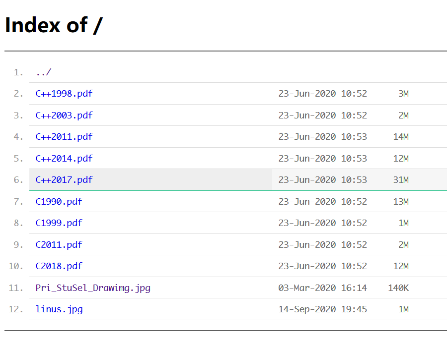

nginx开启目录浏览
环境搭建
本次在我的win10上安装，所以阅读的相关文档是win10系统下的。
首先，下载nginx/Windows的压缩包。
接着，找个位置将其解压，并在cmd中cd到解压位置，将其运行。
|
启动失败看错误报告，详情见参考文章里的第一篇
相关nginx操作指令：
| 指令 | 描述 |
|---|---|
| nginx -s stop | fast shutdown |
| nginx -s quit | graceful shutdown |
| nginx -s reload | changing configuration, starting new worker processes with a new configuration, graceful shutdown of old worker processes |
| nginx -s reopen | re-opening log files |
配置修改
编辑：D:\nginx-1.19.2\conf\nginx.conf
在http{}里的server{}里修改相关配置：
|
每次修改配置后，都需要运行
nginx -s reload才能看到修改。
显示美化
这里介绍简单的美化，下载插件，将里面的.autoindex目录放到资源所在目录，修改相关配置：
|
另一个美化方法可参考：https://github.com/Naereen/Nginx-Fancyindex-Theme
设置为开机启动：
这里采用一种简单方便的办法。新建一个nginx快捷方式放到C:\Users\[用户名]\AppData\Roaming\Microsoft\Windows\Start Menu\Programs\Startup目录即可。
win10下，显示的目录里如果有中文，将会无法访问
我的效果图：

参考文章
乱码探究
win10下，nginx中文乱码，设置：charset utf-8,gb2312;
解决了中文乱码，但是nginx无法访问中文文件名，目前无法解决，除非系统使用utf-8
[win10的utf-8目前无法获得良好的体验]
网上有人说在后端个别目录用APACHE代理了，APACHE支持中文码：
location /~doc/ {
proxy_pass http://127.0.0.1:81/;#apache server
}
==Linux下两个工具convmv和iconv==
convmv就是更改文件名编码方式的一个工具。比如
sudo convmv -f gbk -t utf-8 -r –notest /home
就是将/home目录下原来文件名是gbk编码方式的全部改为utf-8格式的。这里 -f 后面为原来的编码方式，-t 后面是要更改为的编码方式， -r 表示这个目录下面的所有文件， –notest 表示马上执行，而不是仅仅测试而已。另外这命令好像要root才能执行，因此要加上 sudo。
iconv是更改文件编码方式的一个工具：
sudo iconv -f gbk -t utf-8 -o outfile infile
-f为原来的编码方式，-t 为输出文件的编码方式， -o表示输出文件名，这利用outfile表示，最后跟上要更改编码方式的文件名sourcefile 。
通过这两个工具，中文文件乱码的问题终于解决。